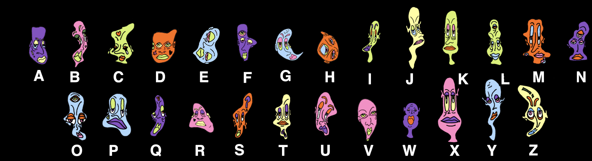

Designed by Oriana Lacau
Spectator is a website that displays illustrations made by Oriana Lacau when you type. Each letter is assigned an illustration and your message will appear as spectators, who watch what you say. View the key below.
spectators
